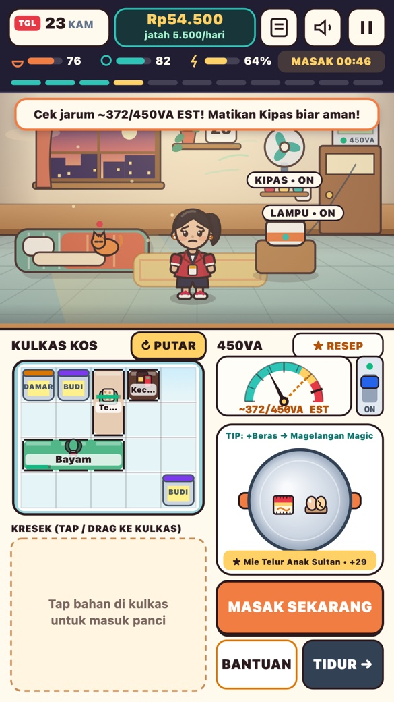
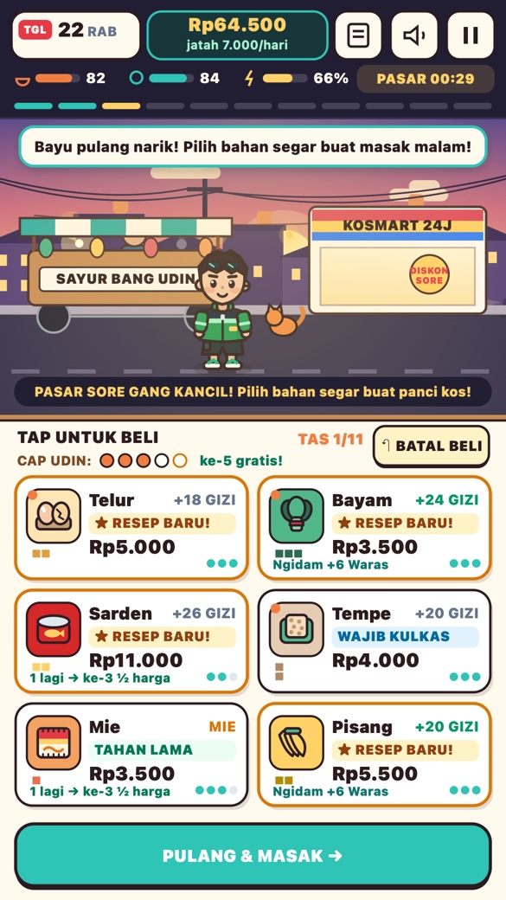

Karyawan Kantor • Seimbang
Raka
Anak kantor pelanggan setia KRL. Mulai dengan saldo awal paling seimbang — paling enak dipakai buat coba main pertama kali.
Gaji kemarin baru kepakai kirim Rp2 juta ke kampung buat bayar ujian adek dan obat Bapak. Masuk Tanggal 20, isi dompet tinggal pas-pasan buat akhir bulan. Belanja sayur obral sore, bagi rak kulkas sama Mas Budi, masak di Magic Com 450VA jangan sampai listrik jeklek, dan matikan lampu pas Ibu Kos ketuk pintu.

Transfer Rp2.000.000 buat bayar ujian adek & kontrol Bapak.
Tipis bukan karena boros, tapi keluarga di kampung tetap duluan.
Gelar lapak baju bekas di CFD Sudirman & jadi penonton TV.
Cetak Struk Kosmart & cicil perabot baru buat kamar kos.
Mulai dari pulang kerja jam 5 sore sampai tengah malam: berburu bahan diskon, atur isi kulkas, masak di panci listrik, lalu hadapi urusan malam.

Pilih maksimal 3 dari 12 bahan pilihan (termasuk Kornet, Santan, Roti Tawar & Rawit), cek jarum listrik kamar, lalu tekan Masak Sekarang.
Tiap penghuni punya pekerjaan, ongkos harian, dan ujian akhir bulan yang beda-beda.
Anak kantor pelanggan setia KRL. Mulai dengan saldo awal paling seimbang — paling enak dipakai buat coba main pertama kali.
Uang awal lebih tipis habis bayar fotokopi & praktikum, tapi ongkos ke kampus murah dan kuat begadang.
Tiap hari narik ada tambahan uang orderan buat bensin, tapi saldo awalnya tipis dan motor kadang minta servis.
Kerja shift berdiri seharian di mal. Asal kuat bertahan sampai Tanggal 25, ada uang komisi cair!
Tembus Tanggal 1 — atau tumbang di tengah jalan — kamu bakal dapat Struk 2.0 Kosmart Gang Kancil
lengkap dengan masakan andalanmu, gelar anak kos seperti [PAWANG LISTRIK 450VA], sampai
Jimat Anak Kos pilihanmu buat dipamerkan ke Story.
Ada juga mode Tanggal Tua Harian (#TTH): harga pasar & kejadian malamnya sama persis buat semua pemain di hari itu. Adu irit dan bandingkan barisan tanggal 20 21 22 23 24 sama teman kos atau kantor!
Punya ide kerja sampingan akhir pekan, jajanan Gerobak Bang Udin, resep panci Magic Com, atau trik hemat tanggal 28? Vote ide favoritmu atau kirim usulan — ide terpilih rilis tiap 2 minggu lengkap dengan @username-mu di dalam game & bonus Rp50.000 Tabungan Kos!
Cukup pakai email Apple ID atau Gmail Google Play — tanpa KTP, tanpa bikin akun baru. Nama penguji awal yang aktif kirim masukan bakal dicantumkan di kredit dalam game!
Daftarkan email kamu agar langsung dikabari oleh tim KAS Studio begitu rilis publik App Store untuk iPhone & iPad kembali dibuka.
Tulis alamat Gmail yang terhubung ke Google Play supaya akunmu langsung dibuka akses unduhnya.
Nemu tampilan kepotong, susah di tanggal tertentu, atau punya ide resep Magic Com? Kirim langsung di sini.
Aman dimainkan di KRL, halte TransJakarta, atau pas Wi-Fi kosan lagi mati di akhir bulan.
Gak ada iklan tiba-tiba muncul memotong layar. Iklan cuma ada kalau kamu sendiri yang pilih nonton buat ambil bonus.
Semua 12 perabot kamar (termasuk Kucing Oyen & Stabilizer 560VA) dan 8 Kasta Kos kebuka dari uang Tabungan Kos.
Kurang suka diburu waktu? Nyalakan Mode Santai di awal main supaya belanja, masak, dan baca chat lebih tenang.
Ya, gratis diunduh dan bisa ditamatkan sampai Kasta 8 tanpa bayar sepeser pun. Pembelian opsional seperti Bebas Iklan murni buat yang mau dukung studio lokal.
Bisa! Pasar sore, kulkas, Magic Com 450VA, efek suara, sampai simpanan permainan semuanya jalan langsung di HP tanpa perlu internet.
Karena kamu harus jaga 3 hal barengan: Dompet, Lambung (jangan makan mie polos 4 hari berturut-turut!), dan Kewarasan (jangan matikan kipas terus atau tergoda pinjol). Kalaupun kalah, kamu tetap bawa pulang Tabungan Kos & bantuan Kiriman Kakak buat percobaan berikutnya.
Cukup kirim email di bagian Daftar Uji Coba & Rilis halaman ini agar tim KAS Studio
mengirimkan notifikasi rilis resmi App Store (iPhone & iPad) atau akses Google Play Closed Beta (Android) langsung ke
inbox-mu. Setelah main, mampir ke tanggaltua.id/#masukan buat cerita kesanmu!
Boleh banget! Kami senang lihat adu bertahan hidup #TanggalTua versi kalian. Klik tombol
Press & Creator Kit di bawah buat ambil logo dan gambar sampul resolusi penuh.
Daftar tunggu rilis App Store (iOS) atau Closed Beta Android — tanpa iklan dadakan dan tanpa daftar ribet.